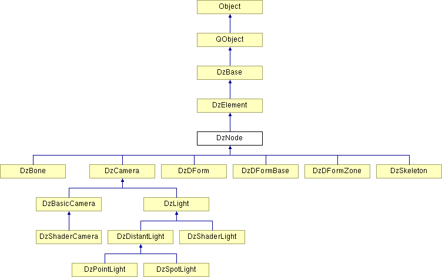

Derivation is a way to express the "is-a" relationship of two classes, meaning if you can use "is-a" in a statement about two classes, and that statement is considered to be true, then it makes sense for the first to be a subclass of the second (e.g. An Apple is-a Fruit, A Terrier is-a Dog, A Dog is-a Mammal).
In DAZ Studio, one of the most common objects users interact with are nodes. Nodes come in several forms, but they all have one thing in common... they are all, at the very least, nodes. That being the case, we can generalize operations and/or properties of nodes in a single class, DzNode. From there we can become more specific, differentiating between what a camera might do as opposed to say a bone or skeleton. Using the "is-a" statement as mentioned above, we can feel comfort in knowing that the statement, DzCamera is-a DzNode, is true. Likewise, DzBone is-a DzNode and DzSkeleton is-a DzNode are also true, thus DzCamera|DzBone|DzSkeleton make sense as subclasses of DzNode.
|
 Figure 1 |
Figure 2 |
Figure 3 |
Looking at the inheritance tree above, you can see the hierarchical relationship of several classes. We can see that DzSpotLight inherits from DzDistantLight, DzDistantLight inherits from DzLight, DzLight inherits from DzCamera and DzCamera inherits from DzNode (and DzNode from DzElement, DzElement from DzBase and DzBase from QObject). What this means to you, the scripter, is that each instantiated subclass has all of its own methods and properties, but it also has access to the methods and properties of its parent class, and its grandparent class... and so on.
It's important to point out, given the class hierarchy depicted above, that subclasses can override inherited methods and provide a specialized implementation for those behaviors. For example, lets examine DzPointLight. We see above that DzLight inherits from DzCamera. This is so lights can be viewed through, in the user interface. For directional lights this makes sense, but for a point light - which emits light in all directions - there is no single direction that makes sense to view from, so the behaviors that allow lights to be viewed from are overridden.
In the figures above, we see that QObject is at the top of the tree. With the exception of the ECMAScript/QtScript - Native Objects, this is true of all Intrinsic Types (Modules) in DAZ Script - they must in order to be exposed to scripting.